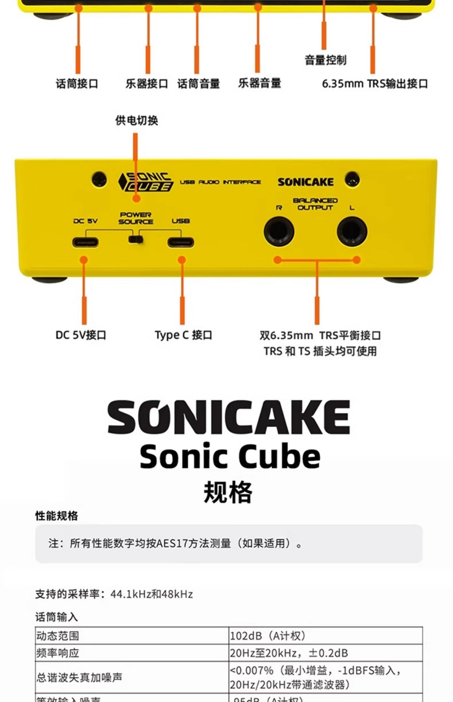
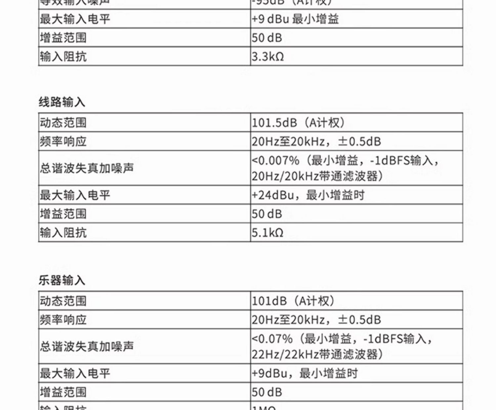
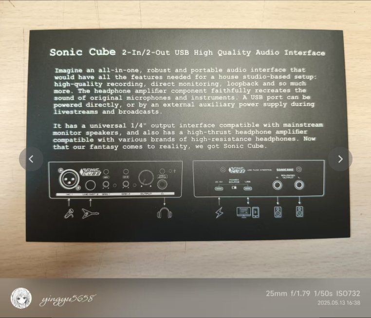
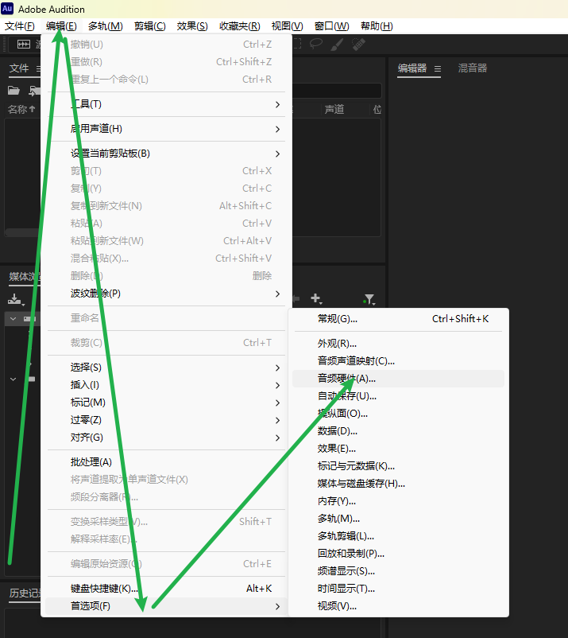

Sonic Cube声卡开箱
淘宝新用户有卷，减免好几十块钱，赢！
参数如图




盒子里声卡x1 耳机x1 卡片x1 卡侬线x1

别的不说，就这个等宽字体就非常让人喜欢了（代码敲多了导致的。
共有两面提供接口


USB、麦克风、乐器输入，图一的耳机输出。其实我个人弹贝斯只需要乐器输入和耳机输出用一用，其他的好像没什么需求，那么来仔细盘一盘这个耳机。

该说不说，作为一个赠品，他完全没有赠品的样子，起码没有廉价感。入耳式，3.5接口，送了一个乐器转接线。音质这一块当然和我的铁三角比不了，毕竟是赠品+监听耳机，更注重功能性。总体中低频比较明显，听起来雾蒙蒙的吧。
下载好驱动以后接到电脑，打开开关，我这里用的软件是AU，要改一下音频硬件，如图

然后再去音频声道映射把输入改成ln2。接乐器线就可以录音了。实测耳机能用，但一般，录音音质在这个价位的声卡也算是相当能打的。